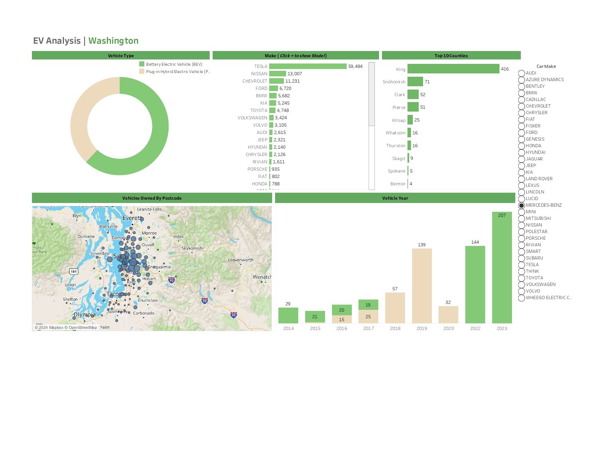

Project Summary
This Tableau project presents an end-to-end visual analytics dashboard to support exploration of EV adoption. It combines a vehicle type split, make ranking, county concentration, a postcode ownership map, and vehicle-year patterns to help stakeholders identify where adoption is concentrated and how it is changing over time.
Problem
Build an interactive dashboard that enables users to explore EV adoption and market patterns: how adoption varies by vehicle type, which manufacturers dominate, where ownership clusters geographically, and how counts vary by vehicle year.
Data
- Geographic focus: Washington
- Core fields represented in the dashboard: vehicle type, make, county, postcode ownership, vehicle year
- Primary dashboard views: vehicle type split, make ranking (with model drill-down), top counties, map, and vehicle-year bars
All figures referenced below are taken directly from the Tableau EV dashboard visualisations.
Headline Indicators (from the dashboard)
Values are taken from the make ranking, top counties chart and vehicle year distribution shown in the dashboard.
Key Insights
- Manufacturer concentration is strong: Tesla leads with 59,484, followed by Nissan (13,007) and Chevrolet (11,231). Ford (6,720) and BMW (5,682) form the next tier, with Kia (5,245) and Toyota (4,748) also significant contributors.
- EV ownership is geographically concentrated. King county leads with 416, followed by Snohomish (71), Clark (52) and Pierce (51). This supports prioritisation for infrastructure planning and targeted policy interventions.
- The vehicle year chart shows visible growth in later years. Counts displayed include 2018 (57), 2019 (139), 2020 (32), 2022 (144) and 2023 (207), indicating a strong recent rise in EV representation in the dataset.
- The postcode map reveals clustering around major population areas, supporting analysis of adoption hotspots and regional demand. This complements the county ranking by adding fine-grained location context.
- Vehicle type is split between BEV and plug-in hybrid categories in the dashboard, enabling users to compare adoption patterns across fully electric vs hybrid adoption segments.
Methods
- Interactive dashboard design with multi-view layout (type split, make ranking, top counties, map, vehicle year)
- Geospatial mapping for postcode-level ownership exploration
- Segmentation and ranking to highlight top contributors and adoption concentration
- Filter-driven exploration by car make, enabling stakeholder self-service analysis
Results
- Delivered a clear, stakeholder-friendly Tableau dashboard for EV adoption exploration
- Enabled identification of dominant manufacturers and high-concentration counties
- Provided time context through vehicle-year distribution and location context through postcode mapping
What This Demonstrates (Senior Analyst Signals)
- Ability to translate a policy/commercial question into an interactive analytics product
- Segmentation, ranking and geographic reasoning for evidence-based prioritisation
- Clear insight communication: concentration, growth patterns and comparative breakdowns
- Dashboard design for stakeholder adoption and self-service exploration